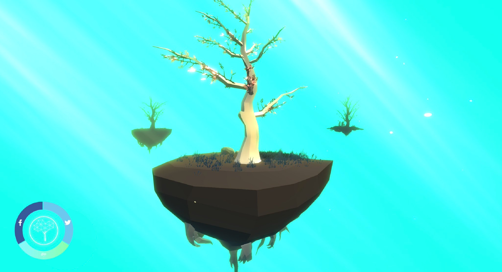

IdentiTree
The digitalization of the "self", a confrontation of the virtual identity
With the growing use of social networks and their adoption in daily live, a great amount of information, known as Big Data, has emerged and is being used by big companies to better understand the preferences of their clients and produce customized services. Part of the potential uses of this information are, nonetheless, being partially wasted since the Big Data does not reveal just the taste and preferences of the people but also is capable of construct the virtual identity of each user. In other words, it is possible to generate unique products that reflect this identity for each individual and in that way is capable of reach a whole new level of customization.
{kind=link}
What is IdentiTree?
{kind=link}
{kind=link}
How does it work?
{kind=link}
First Station: Login Station
In the first one, the user accepts terms and conditions necessaries to allow the system to access the public information in their Facebook and Twitter accounts. Then an algorithm analyzes the user’s pictures to generate a color palette while the written content is processed with the personality Insights recognition and the tone analysis tools offered by Watson, an IBM platform.

Second Station: Product Interaction Station
The Second station receive numerical values generated by the analysis from the user’s personality and show them as visual characteristics of the digital tree, as the openness of its branches, the size of the earth under the tree and the form of its trunk. Also the color palette is included in the trunk and leaves of the tree and the hue of the background is defined by the color that represents better the average sentiment found in the user's data.
How each tree is created?
{kind=link}
The Tone Analysis
The user can interact in real time by making new posts, that are reflected in the colors and lights of the scene, depending on the tone used in the new post itself. the tone analysis of IBM Watson define if the sentiments found in a text are positive or negative.
{kind=link}
Personality Insights by IBM Watson
To this projecto was only considered five Insights given by the online service from IBM Watson.
Emotional Range:
Also referred to as Neuroticism or Natural reactions, is the extent to which a person's emotions are sensitive to the individual's environment.
Openness:
It is high when the user is expressive, candid, dramatic, spontaneous, witty and low when the user is inner-directed, introspective, meditative, contemplating, self-examining.
Structure:
Exhibit groundedness and a desire to hold things together. They need things to be well organized and under control.
Love:
Enjoy social contact, whether one-to-one or one-to-many. Any brand that is involved in bringing people together taps this need.
Closeness:
Relish being connected to family and setting up a home.
Definition of visual characteristics
{kind=link}
{kind=link}
The Trunk
The trunks form is defined for how structured the user is according to the personality insights from IBM Watson, while its thickness depends on how much the user tend to share or post data in the social networks.
{kind=link}
The Branches
The quantity of the branches depends on the quantity of friend the user have, while the aperture will depend on the characteristic called “openness” in the personality analysis.
{kind=link}
The Base
Its size depend on the emotional range detected in the analysis. The amount of vegetation in the base depends on the sentiment analysis of the whole data of the user.
{kind=link}
The Roots
The size of the roots and how much they can be seen depends on the value of “closeness” given by the analysis from IBM Watson.
The Leaves
The amount of leaves depend on the quantity of photos that the user have upload in the social media. There is three possibilities in its form, a simple leaf, a more complex leaf composed of more leaves and a the most complex leaf with a a big amount of leaves in its form. These forms will depend of ranges of “love” resulted in the personality analysis.
{kind=link}
The Interface
The First Station
In the first station the user can find the welcome screen, followed by the terms and conditions screen, where people can understand the main idea of the installation and synchronize their facebook and twitter accounts to start the data processing. When the synchronization finished, the user is invited to continue to the next station
{kind=link}
{kind=link}
{kind=link}
The Second Station
In the second station the user can see the result of the processing from her or his social media data. There will be three kinds of tree. The fist one is the sum of all the information of social media. Second and the third one represent the virtual self found in each social network, one for Facebook and another one for Twitter.
The user can also check the meaning of the visual characteristics of the tree by clicking on the info button and then choosing the characteristic that he / she wants to see. For Example it the user click on the leaf icon, the interface will show what kind of leaf the user has and what does that mean according to the personality analysis from IBM Watson.
{kind=link}
{kind=link}
{kind=link}
Finally the user can share their IdentiTree on Twitter direct form the installation.